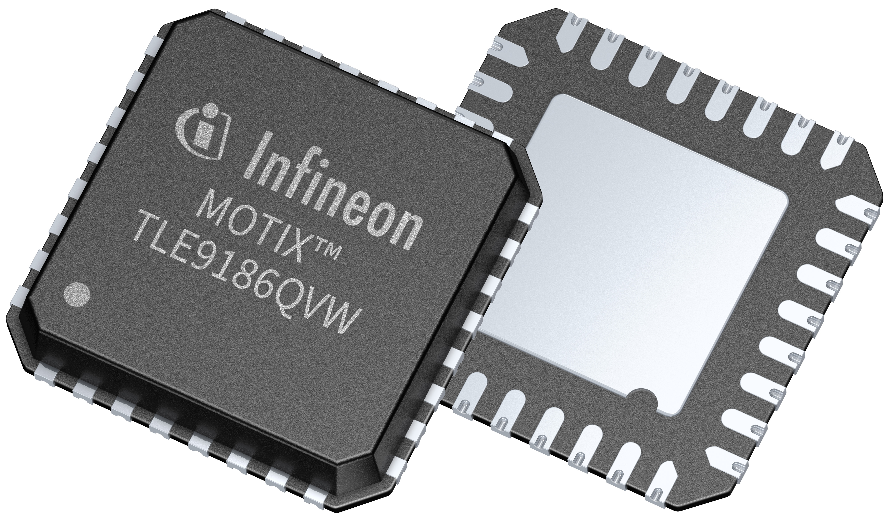

Preface
Product images

Features
- High power 3-phase bridge driver for switching of six N-channel FETs with a QGtot of up to 150 nC at a 20 kHz PWM
- 8 V to 29 V functional supply voltage range for 12 V battery supply systems
- Extended functional supply voltage down to 4.5 V
- Programmable current controlled output stages
- 0…100% duty cycle supported without restrictions
- High robustness of motor connection pins of -6 V to 40 V
- Current sense amplifier for low side shunt current measurement with high accuracy of 0.8% and fast settle time 1 μs
- Serial peripheral interface (SPI) providing extended monitoring and diagnostic functions
- SPI configurable failure reaction
- SPI window watchdog for microcontroller supervision
- Passive clamping of external FETs
- Low quiescent current mode
- Small VQFN 32 pin 5x5 mm supporting automated optical inspection capability (AOI)
- Green product (RoHS-compliant)
- AEC-Q100, Grade 0 qualified
- Developed according to ISO 26262 ed. 2018 ASIL-B
- H-bridge driver for switching four N-channel FETs with a QGtot of up to 150 nC at a 20 kHz PWM
- 8 V to 29 V functional supply voltage range for 12 V battery supply systems
- Extended functional supply voltage down to 4.5 V
- Programmable current controlled output stages
- 0…100% duty cycle supported without restrictions
- High robustness of motor connection pins of -6 V to 40 V
- Current sense amplifier for low side shunt current measurement with high accuracy of 0.8% and fast settle time 1 μs
- Serial peripheral interface (SPI) providing extended monitoring and diagnostic functions
- SPI configurable failure reaction
- SPI window watchdog for microcontroller supervision
- Passive clamping of external FETs
- Low quiescent current mode
- Small VQFN 32 pin 5x5 mm supporting automated optical inspection capability (AOI)
- Green product (RoHS-compliant)
- AEC-Q100, Grade 0 qualified
- Developed according to ISO 26262 ed. 2018 ASIL-B
Potential applications
- 12 V three-phase BLDC motors
- 12 V water / fuel pump
- 12 V fan application
- 12 V comfort seat, sunroof,
- 12 V integrated thermal management system
- 12 V seat control and extended functions (steering column adjustment, gas pedal adjustment)
- 12 V power lift gate
- 12 V central door lock
- 12 V body control module (cargo cover, washer pump, window lift, rear wiper ...)
Product validation
Product validation according to AEC-Q100, Grade 0. Qualified for automotive applications
Description
The TLE9186 is an advanced gate driver IC designed for controlling 6 external N-channel power MOSFETs forming an inverter for 3-phase motor applications in the automotive sector. All low- and high-side output stages are based on a floating gate driver concept and capable of driving a wide range of N-channel power MOSFETs.
An integrated SPI interface is used to configure the TLE9186 for the application after power-up. After successful power-up, parameters can be adjusted by SPI, monitoring data, configuration and error registers can be read out. Cyclic redundancy check over data and address bits ensures safe communication and data integrity. GND related inverter bridge current can be measured with an integrated current sense amplifier.
The complete register map is provided in the TLE9186 User Manual. Refer to the user manual for detailed register descriptions, bit definitions, default values, and access permissions.
The TLE9186 offers a wide range of diagnostic features, like monitoring of power supply voltages as well as system parameter monitoring. Failure behavior, threshold voltages and filter times of the supervisions of the device are adjustable via SPI. The TLE9186 is especially designed for safety relevant motor drive applications and was developed according to ISO 26262 ed. 2018 ASIL-B. Safety documentation, such as safety manual is provided. An optimized monitoring and diagnostic concept, including self-test functions ensures high flexibility on fault reactions and low FIT rates for the relevant failure modes. The VQFN32 package with an exposed pad for an optimized thermal performance and provides special leads allowing an automated optical inspection.
The TLE92102 is an advanced gate driver IC dedicated to control up to four N-channel MOSFETs. It includes two half-bridges for DC motor control applications such as automotive power seat control or other applications.
An integrated SPI interface is used to configure the TLE92102 for the application after power-up. After successful power-up, parameters can be adjusted by SPI, monitoring data, configuration and error registers can be read out. Cyclic redundancy check over data and address bits ensures safe communication and data integrity. GND related inverter bridge current can be measured with an integrated current sense amplifier.
The complete register map is provided in the TLE92102 User Manual. Refer to the user manual for detailed register descriptions, bit definitions, default values, and access permissions.
The TLE92102 offers a wide range of diagnostic features, like monitoring of power supply voltages as well as system parameter monitoring. Failure behavior, threshold voltages and filter times of the supervisions of the device are adjustable via SPI. The TLE92102 is especially designed for safety relevant motor drive applications and was developed according to ISO 26262 ed. 2018 ASIL-B. Safety documentation, such as safety manual is provided. An optimized monitoring and diagnostic concept, including self-test functions ensures high flexibility on fault reactions and low FIT rates for the relevant failure modes. The VQFN32 package with an exposed pad for an optimized thermal performance and provides special leads allowing an automated optical inspection.
| Product type | Package | Marking |
|---|---|---|
| TLE9186 | VQFN-32 | TLE9186QVW |
| Product type | Package | Marking |
|---|---|---|
| TLE92102 | VQFN-32 | TLE92102QVW |